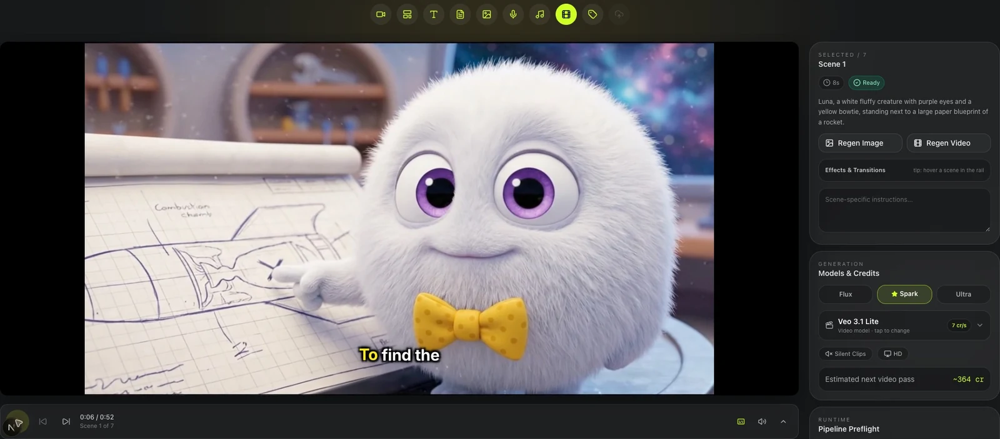
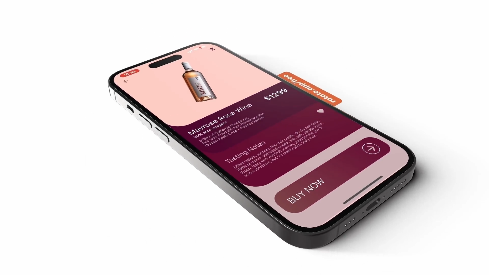
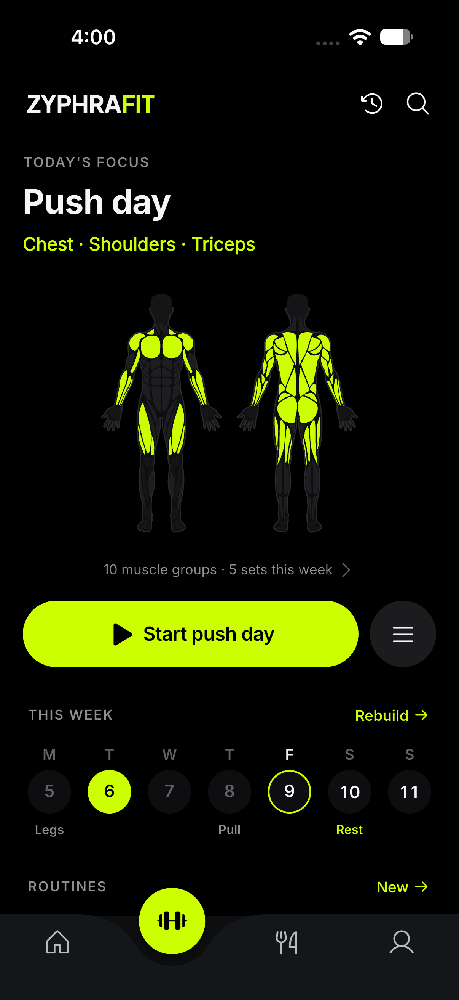

Coffee ordering
Fika Coffee
A coffee-ordering interface with a visual menu, drink sizes and customisation, and a shopping cart. The silent walkthrough shows the flow between menu items and ordering controls.
Mobile apps & practical software
I build mobile apps and useful web tools, with clear interfaces and attention to the details that make them work.
Explore the app workSelected work
Coffee ordering
A coffee-ordering interface with a visual menu, drink sizes and customisation, and a shopping cart. The silent walkthrough shows the flow between menu items and ordering controls.

Video creation
A scene-based video creation workspace, with a preview player, scene controls, and options for regenerating images and video. The screen shown is a preview of an app in development.

Product & commerce
A product-detail interface for a wine store, bringing product imagery, tasting notes, favourites and a purchase action together on one screen.

Workout interface
A workout interface built around the day’s focus, an anatomical muscle-group view and weekly routines. This is a preview of an app in development.
More app work
Finance interfaces
A finance app with dashboard, ledger and transaction-editing interfaces. The work centres on viewing records and managing transaction details.
Tasks & scheduling
An app with task creation, scheduling and verification options, connecting the setup of a task with how its completion is checked.
Published on Android
A published nutrient-calculator app for use with GreenLoop hydroponic nutrients. Available on Google Play under kisharora.
View on Google PlayIndependent experiments
Five recent, independent, AI-assisted prototypes using sample data. Open a demo, try a workflow, and inspect the implementation.
Flutter · Dart · Browser-local state
A mobile-first work-order app for a fictional field-service team. Search jobs, update their status and keep field notes.
Try thisOpen a job, add a sample note, then refresh to check that it stays.
13 unit & widget tests. Separate state and persistence layers, storage-error handling and responsive layouts. This browser build saves notes and status locally; no backend or account.
JavaScript · CSV parsing · Validation
A compact migration lab: map columns, validate records, choose a duplicate policy and export clean and rejected rows.
Try thisLoad the 12-row sample, change the duplicate policy and compare the exports.
14 core tests. Quoted CSV, calendar dates, duplicate semantics and formula-safe export. File contents are processed in the browser; no upload, persistence or server import.
Python CLI · Media checks · HTML report
A readable preflight report generated from a sample media folder, bringing file checks and findings into one review surface.
Look insideReview the sample report and its per-file findings before a media handoff.
Generated from synthetic fixtures. This page is a pre-generated sample report from a Python CLI; it does not run Python or inspect files in your browser.
JavaScript · Node.js · SerpApi integration
An opportunity-research workbench with evidence drawers, a shortlist and exports. Inspect the reasoning behind a lead’s classification.
Try thisOpen a source excerpt, shortlist a fictional lead and export a research brief.
50 automated tests in the source project, including backend contracts with mocked provider responses. The hosted demo uses fictional examples; live SerpApi search requires the separate local Node.js backend.
Next.js · React · TypeScript
A four-step project-brief builder with validation, an editable review and browser-generated handoff files.
Try thisLoad the synthetic example, change the scope, then export the current brief as JSON or Markdown.
12 focused tests. Typed validation, React interactions, local-save restoration and safe exports. Independent static prototype with no AI processing, backend or connected integrations.
The selected app work is separate from the five independent prototypes. Prototype demos use sample data and are AI-assisted portfolio builds, not client commissions or endorsements. GreenLoop has a Google Play listing. TubeDaddy and ZyphraFit are in development and have not launched.
Test counts are build-time evidence, not live checks or a production guarantee. Use sample data in demos. Static hosting receives normal page requests. Linked code retains its existing terms.